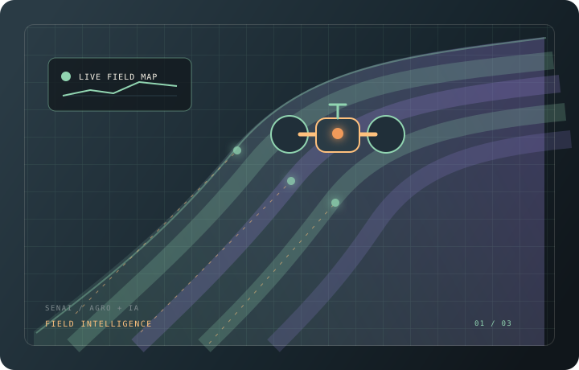
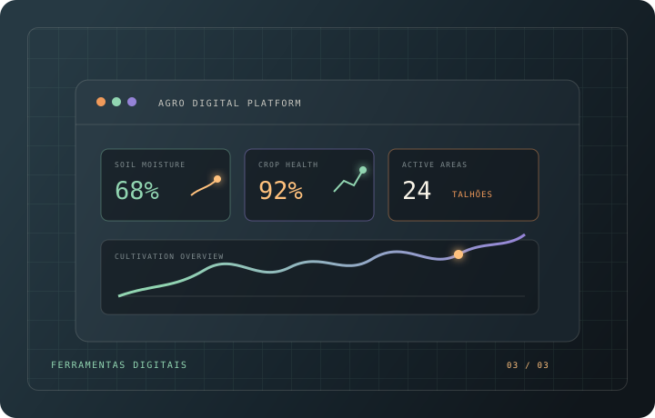
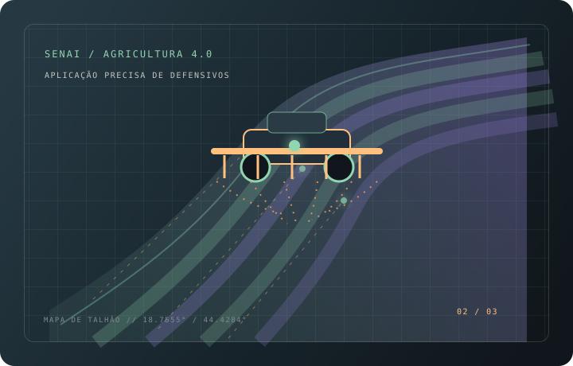

em desenvolvimento
Desenvolvimento
Fundamentos para construir páginas e soluções web.
formação e experiências práticas
Sou estudante do ensino médio técnico em Desenvolvimento de Sistemas.
um pouco da minha perspectiva
Com o tempo, a área de tecnologia se tornou algo interessante para mim e uma forma de aprender coisas novas.
Nasci em Curvelo, Minas Gerais, e estudo na Escola Irmã Raimunda Marques, onde faço o ensino médio técnico em Desenvolvimento de Sistemas.
Também estou cursando no SENAI a formação de Ferramentas digitais e plataformas de IA para o agro, que aborda possibilidades da tecnologia no agronegócio. Tenho conhecimento básico em impressão 3D, mas sei trabalhar com diferentes recursos e possibilidades da área.
Em 2026, participei, junto com minha turma do terceiro ano do ensino médio, do projeto GREEN TECH, realizado pela Liga STEAM. Essa experiência ampliou meu interesse por tecnologia e por atividades práticas.
Apesar desse interesse, meu principal foco profissional é me preparar para atuar como operador de máquinas agrícolas.
o que estou desenvolvendo
Fundamentos para construir páginas e soluções web.
Recursos que apoiam organização, prototipação e código.
Temas que fazem parte da minha formação técnica.
formação complementar / SENAI
Curso ainda em andamento sobre ferramentas digitais e possibilidades de uso da inteligência artificial no agronegócio.
o que estou cursando agora
Estas são as formações que fazem parte da minha jornada atual e que ajudam a construir meus próximos passos.
formação técnica
Escola Irmã Raimunda Marques
conteúdo da formação
Aprendo a criar páginas e sistemas, pratico lógica de programação, banco de dados, JavaScript, organização de projetos e desenvolvimento de soluções para a web.
próximo foco de desenvolvimento
Quero aprofundar meus conhecimentos em JavaScript, testes, segurança, integração com banco de dados e transformar mais ideias em projetos completos.
qualidade e aplicação
É uma base técnica sólida e essencial para entender como a tecnologia funciona, com espaço para evoluir por meio de prática e novos projetos.
formação complementar / SENAI
SENAI
conteúdo da formação
Estudo como a tecnologia e os dados ajudam a aplicar defensivos agrícolas com mais precisão, responsabilidade e eficiência no campo.
próximo foco de desenvolvimento
Quero ampliar minha experiência prática com máquinas, equipamentos, leitura de dados e tomada de decisão em diferentes situações agrícolas.
qualidade e aplicação
É uma formação muito ligada à realidade do agronegócio e combina tecnologia, produtividade e cuidado com o uso dos recursos.
formação complementar / SENAI
SENAI
conteúdo da formação
Conheço ferramentas digitais e plataformas de inteligência artificial que podem apoiar o planejamento, a análise de informações e as atividades do agronegócio.
próximo foco de desenvolvimento
Quero praticar mais a aplicação dessas ferramentas em situações reais, melhorar a análise dos resultados e aprender a usar a IA de forma segura e responsável.
qualidade e aplicação
É uma formação atual e complementar, que amplia minha visão sobre como a tecnologia pode tornar o trabalho no campo mais organizado e inteligente.
a base continua crescendo
Conhecimento é um projeto sem versão final. Esta é a etapa atual da minha jornada.


formação técnica
Escola Irmã Raimunda Marques
Formação em desenvolvimento web, banco de dados, lógica de programação, engenharia de software e projetos práticos.
formação complementar
SENAI
Formação voltada ao uso preciso e responsável de tecnologias na aplicação de defensivos agrícolas.

formação complementar
SENAI
Ainda estou cursando esta formação, que aborda ferramentas digitais e plataformas de inteligência artificial aplicadas ao agronegócio.
Tem uma ideia, oportunidade ou quer trocar experiências? Estou à disposição para conversar.